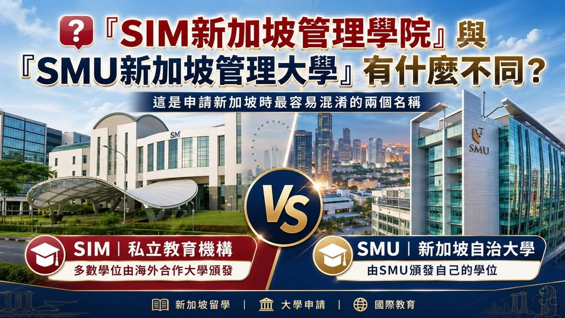

《看懂制度，選對世界》第一集
SIM 新加坡管理學院與 SMU 新加坡管理大學有什麼不同？
『SIM新加坡管理學院』與『SMU新加坡管理大學』有什麼不同？這是申請新加坡時最容易混淆的兩個名稱。『SMU新加坡管理大學 Singapore Management University』 縮寫 SMU 學校性質 新…

『SIM新加坡管理學院』與『SMU新加坡管理大學』有什麼不同？這是申請新加坡時最容易混淆的兩個名稱。『SMU新加坡管理大學 Singapore Management University』 縮寫 SMU 學校性質 新加坡自治大學 學位來源 由SMU頒發自己的學位 主要特色 商學、會計、經濟、資訊、法律及社會科學 入學方式 每年統一招生，採競爭性審查及面試 Tuition Grant 部分課程及學生可依規定申請 SMU是新加坡公立資助的自治大學 SMU是新加坡六所自治大學之一，在新加坡享有極高學術地位。
學生完成課程後，取得的是由Singapore Management University頒發的SMU學位。
. SIM主要提供海外大學合作課程 SIM新加坡管理學院 英文名稱 Singapore Institute of Management 縮寫 SIM 學校性質 新加坡私立教育機構 學位來源 多數學士及碩士課程由海外合作大學頒發 主要特色 提供多國大學合作課程及自己的文憑課程 入學方式 依合作大學及個別課程訂定申請要求 Tuition Grant 私立教育機構課程通常不適用政府Tuition Grant SIM Global Education屬於新加坡私立教育機構，主要招收國際學生，提供自己的Diploma及Graduate Diploma，也與英國、美國、澳洲、加拿大等海外大學合作開設學士及碩士課程。
SIM並未在政府學費補助計劃中。例如，學生在SIM修讀英國伯明罕大學合作課程，取得的是伯明罕大學頒發的學位；學位證書與英國校本部頒發的證書具相同形式與標準，而不是SMU學位。因此，家長不能只看到中文名稱中都有「管理」兩個字，就認為SIM與SMU是同一所學校。
第六部 跨國比較：把選擇放回學生身上
制度是地圖，選擇才是方向。